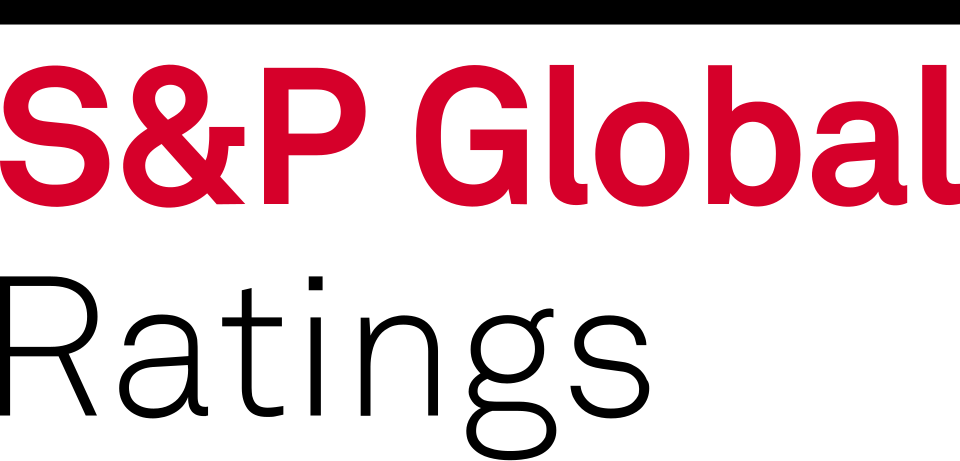

스탠더드 앤드 푸어스 S&P Global Ratings
스탠더드 앤드 푸어스(S&P Global Ratings)는 기업, 정부, 구조화금융 상품이 발행한 채무에 대한 신용등급을 발표하는 미국의 신용평가사이며 S&P Global의 한 부문이다. 이전 명칭은 Standard & Poor's이며 흔히 S&P로 불린다.
최종 업데이트

스탠더드 앤드 푸어스는 어떤 브랜드인가
스탠더드 앤드 푸어스는 기업과 정부, 정부기관, 도시 같은 공공 차입자가 발행한 채무의 신용등급을 매기는 신용평가사이다. 미국 증권거래위원회가 전국공인통계평가기관(NRSRO)으로 지정한 여러 신용평가사 가운데 하나이다.
Moody's Ratings, Fitch Ratings와 함께 3대 신용평가사로 꼽히며, 그중 가장 큰 곳으로 여겨진다. 기원은 1860년 Henry Varnum Poor가 출간한 철도 관련 서적으로 거슬러 올라간다.
1966년에는 The McGraw-Hill Companies에 인수되어 금융정보 서비스 분야로 영역이 넓어졌다. 차입자의 신용등급은 AAA부터 D까지의 척도로 매긴다.
스탠더드 앤드 푸어스는 어떻게 시작되고 성장했나
기원은 1860년 Henry Varnum Poor가 History of Railroads and Canals in the United States를 출간한 데 있다. 이 책은 미국 철도 회사의 재무와 운영 현황에 관한 정보를 종합적으로 정리했다.
1868년 Henry Varnum Poor는 아들 Henry William Poor와 H.V. and H.W.
Poor Co.를 세우고, 매년 갱신하는 Poor's Manual of the Railroads of the United States 등 두 권의 안내서를 펴냈다. 1906년 Luther Lee Blake는 철도 외 기업의 재무 정보를 제공하려고 Standard Statistics Bureau를 세웠다.
1941년 Paul Talbot Babson이 Poor's Publishing을 인수해 Standard Statistics와 합병하면서 Standard & Poor's Corp.가 되었고, 1966년 The McGraw-Hill Companies에 인수되었다.
스탠더드 앤드 푸어스의 브랜드 아이덴티티는 무엇인가
3대 신용평가사 가운데 가장 큰 곳으로 꼽히며, 1860년 철도 정보서 출판에서 출발한 긴 역사를 지닌 미국 신용평가사이다.
스탠더드 앤드 푸어스의 대표 제품과 서비스는 무엇인가
주요 사업은 기업, 정부, 구조화금융 상품이 발행한 채무에 대한 신용등급 발표이다. 장기 신용등급은 AAA부터 D까지의 척도로 매기며, AAA는 S&P가 부여하는 가장 높은 발행자 신용등급이다.
BBB까지는 투자등급이고 BB 이하는 투기등급(비투자등급)으로 구분한다. AA와 CCC 사이에는 BBB+, BBB, BBB−처럼 중간 등급을 둔다.
일부 차입자에게는 상향(positive), 하향(negative), 안정(stable) 가능성을 알리는 크레딧 워치(credit watch)도 함께 제시한다.
스탠더드 앤드 푸어스는 지금 어떤 상태인가
현재 S&P Global의 한 부문으로 운영되며 본사는 55 Water Street에 있다. 과거 주식·펀드 리서치 사업은 2016년 CFRA에 매각했고, 주가지수 상품은 S&P Dow Jones Indices가 맡고 있다.
3대 신용평가사 가운데 가장 큰 곳으로 여겨진다.
스탠더드 앤드 푸어스 로고는 어떻게 변해왔나
자주 묻는 질문
스탠더드 앤드 푸어스는 언제 설립되었나요?
스탠더드 앤드 푸어스는 1941년 설립되었습니다.
스탠더드 앤드 푸어스는 어떤 산업의 브랜드인가요?
스탠더드 앤드 푸어스는 금융 분야의 브랜드입니다.
스탠더드 앤드 푸어스의 브랜드 아이덴티티는 무엇인가요?
3대 신용평가사 가운데 가장 큰 곳으로 꼽히며, 1860년 철도 정보서 출판에서 출발한 긴 역사를 지닌 미국 신용평가사이다.
스탠더드 앤드 푸어스의 대표 제품은 무엇인가요?
주요 사업은 기업, 정부, 구조화금융 상품이 발행한 채무에 대한 신용등급 발표이다.
스탠더드 앤드 푸어스는 현재 어떤 상태인가요?
현재 S&P Global의 한 부문으로 운영되며 본사는 55 Water Street에 있다.
스탠더드 앤드 푸어스의 창업자는 누구인가요?
스탠더드 앤드 푸어스의 창업자는 Henry Varnum Poor, Henry William Poor입니다(위키데이터 기준).
스탠더드 앤드 푸어스의 본사는 어디에 있나요?
스탠더드 앤드 푸어스의 본사는 55 Water Street에 있습니다(위키데이터 기준).
출처와 검증
스탠더드 앤드 푸어스 관련 참고: 공식 웹사이트 · 위키데이터 Q106158 · 한국어 위키백과 · 영어 위키백과. 브랜드명은 한글과 원어를 함께 표기하되 데이터에 없는 표기는 만들지 않습니다. 기원 국가·설립연도는 검수된 정의문에서 확인된 값을 우선하고, 없을 때만 공식 웹사이트 URL이 일치하는 위키데이터 개체의 값을 씁니다. 위키데이터 값은 2026-11-13 기준입니다.